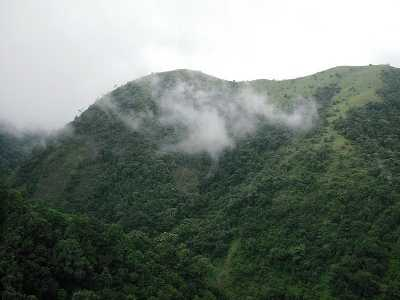
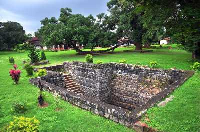
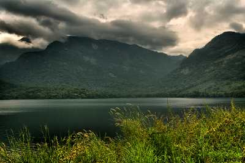
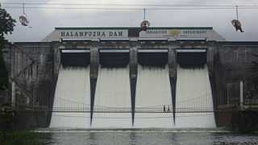
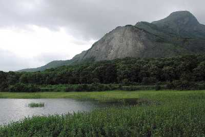
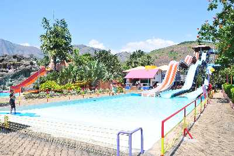

SILENT VALLEY
The Silent Valley National Park, with its lush green forests and beautiful views of the rich flora, is a popular destination for nature and wildlife lovers in Kerala. With its long, detailed history and the unique status of a Rain Forest, this national park is truly a sight to visit. The well-planned Safari and the beautiful stop-overs around the park only make a trip to this part of Kerala more worthwhile.

PALAKKAD FORT
The Palakkad Fort in Kerala is a beautiful historical monument that has gently integrated its high walls with its surrounding green gardens. One of the most well-preserved forts in the state of Kerala, the Palakkad fort was built in the 1766 AD by Hyder Ali and is now a protected monument under the Archaeological Survey of India.

POTHUNDI DAM
One of the oldest irrigation dams in India, Pothundi Dam is a stunning engineering marvel that has a core wall made of quicklime and jaggery. The dam is built across River Padipuzha and River Meenichiladipuzha forming a reservoir that expands over an area of 30 square kilometres. The serene surroundings of the dam with hills in the backdrop of the reservoir is a breathtaking sight.

MALAMPUZHA DAM
Completed in 1955, the Malampuzha Dam feeds the largest irrigation system in Kerala with a network of canals with a capacity of 115.06 m. This reservoir has the Western Ghats towering over it. Boating and fishing facilities are also available for the visitors.

OTTAPALM
Situated on the banks of the Bharathapuzha River, or Nila, Ottapalam is a scenic town in Pallakad, also known as the 'land of palm trees'. Ottapalam claims a rich cultural heritage and has hosted quite a few historic events. Earlier, it used to be a major town of the erstwhile Valluvanad, during the reign of the Zamorins of Calicut.

FANTASY PARK
Fantasy Park is a themed amusement park in the region having a wide variety of exciting dry and water rides and slides to suit every age group and everyoneês choice. One of the most fascinating rides is the 16D Cine Magic Ride. Fantasy Park also has a Planetarium to titillate the curious minds, a food court for delicious delicacies and facilities to make the entire experience a memorable one.